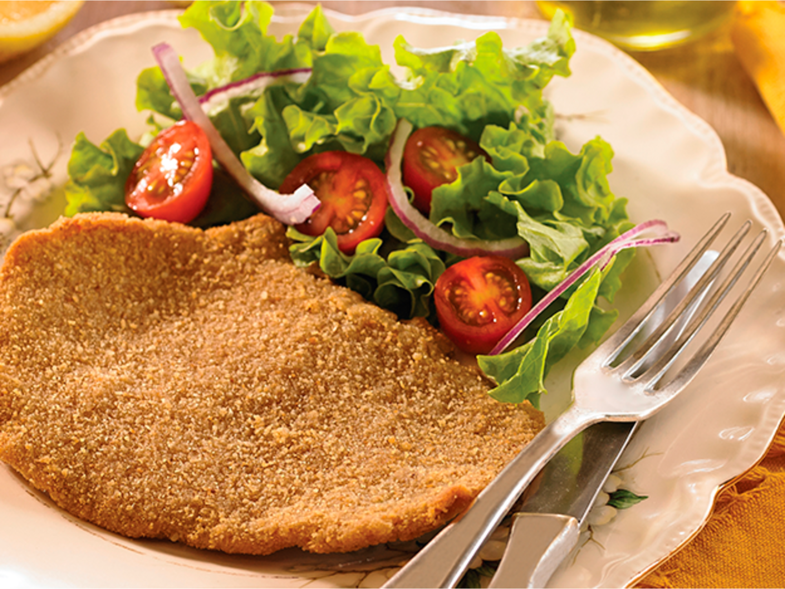

Argentinian Milanesas

One of the most typical meals from Argentina. It consists of marinated meat,
covered in bread crumbs and fried in oil on a pan.
Milanesas are perfect for sandwiches and goes well with mashed or fried potatoes, or even a salad!
Ingredients
- 500 g of meat for milanesas (steaks not very thick should be good enough)
- 2 eggs
- 500g Bread crumbs
- 2 garlic cloves
- 2 tablespoon of Parsley
- Salt
- Pepper
- Cooking oil
Steps
- Remove the fat and nerves that you can from the steak and cut it on slices
- Tenderize the meat with a meat hammer
- Mince the parsley and put it in a bowl
- Peel and mince the garlic cloves and mix them with the parsley
- Add salt and pepper to the mix
- Put the meat slices on the bowl with the mix
- Grab a plate and put some bread crumbs on it
- Grab a slice of meat and cover it well on bread crumbs then leave it on a clean plate
- Heat up a good amount of oil on a frying pan
- Once the oil is hot, fry the meat slices
- Take them out when ready (It usually takes around 2 minutes from each side)
- Dry them in a plate with some kitchen paper